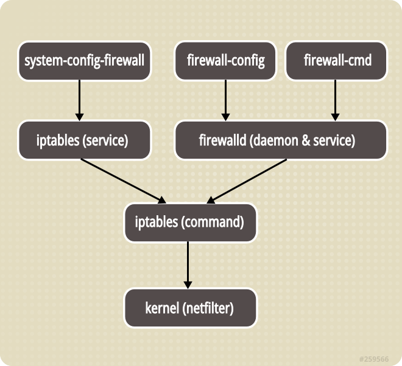

Understand New Linux Firewall¶
New firewalld¶
คำสั่ง firewalld เป็นคำสั่งใหม่เพื่อเข้ามาบริหารจัดการ firewall ใน userland และมาแทนคำสั่ง iptables เมื่อใช่คำสั่ง firewalld ไม่จำเป็นต้องการการ restart service หรือ load firewall rule แต่อย่างใด
Basic Command¶
firewall-cmd¶
ตรวจสอบสถานะการทำงาน
# systemctl status firewalld
(result)
● firewalld.service - firewalld - dynamic firewall daemon
Loaded: loaded (/usr/lib/systemd/system/firewalld.service; enabled; vendor preset: enabled)
Active: active (running) since Sun 2016-07-03 19:53:55 ICT; 2h 15min ago
Main PID: 858 (firewalld)
Tasks: 2 (limit: 512)
CGroup: /system.slice/firewalld.service
└─858 /usr/bin/python3 -Es /usr/sbin/firewalld --nofork --nopid
Jul 03 19:53:47 localhost.localdomain systemd[1]: Starting firewalld - dynamic firewall daemon...
Jul 03 19:53:55 localhost.localdomain systemd[1]: Started firewalld - dynamic firewall daemon.
Jul 03 19:54:05 localhost.localdomain /firewalld[858]: WARNING: FedoraServer: INVALID_SERVICE: cockpit
# firewall-cmd --state
running
ip forward¶
หากมีจำนวน interface card มากกว่า 1 และต้องการตั้งค่า ip forwarding สามารถทำได้ดังนี้
# vim /etc/sysctl.conf
(เพิ่มบรรทัดต่่อท้าย)
net.ipv4.ip_forward=1
# sysctl -p
Zone Management¶
การจะการ firewall มีแนวคิดการแบ่งส่วนออกเป็น zone โดยเชื่อมต่ออยู่กับ network interface เพื่อกำหนดให้แต่ละ package ที่เข้ามานั้นเข้าไปยัง Zone
แสดงค่า default zone และ activezone
# firewall-cmd --get-default-zone
FedoraWorkstation
# firewall-cmd --get-active-zones
FedoraWorkstation
interfaces: enp3s0 wlp2s0
เรียกดู Zone ทั้งหมด
# firewall-cmd --get-zones
FedoraServer FedoraWorkstation block dmz drop external home internal public trusted work
เรียกดูว่า interface อยู่กับ Zone ไหน
# firewall-cmd --get-zone-of-interface enp3s0
FedoraWorkstation
Select Zone for interface¶
เปลี่ยน ให้ enp3s0 ไปอยู่ใน zone work ในระหว่าง session โดยการใช้ parameter --zone= และ --change-interface=
# firewall-cmd --zone=work --change-interface=enp3s0
success
# firewall-cmd --get-active-zones
work
interfaces: enp3s0
FedoraWorkstation
interfaces: wlp2s0
หากมีการ restart session ของ firewall ก็จะกลับคือ default
#systemctl restart firewalld.service
# firewall-cmd --get-active-zones
FedoraWorkstation
interfaces: enp3s0 wlp2s0
permanent change¶
โดยการเปลี่ยนค่าในไฟล์ ifcfg-enp3s0 โดยการเพิ่ม config ZONE=work แต่การแก้ไขไฟล์จะใช้ nmcli command
# nmcli connection modify enp3s0 connection.zone work
# cat /etc/sysconfig/network-scripts/
HWADDR=54:EE:75:8A:86:09
TYPE=Ethernet
BOOTPROTO=none
DEFROUTE=yes
IPV4_FAILURE_FATAL=no
IPV6INIT=yes
IPV6_AUTOCONF=yes
IPV6_DEFROUTE=yes
IPV6_FAILURE_FATAL=no
IPV6_ADDR_GEN_MODE=stable-privacy
NAME=enp3s0
UUID=86ad9274-8e34-3085-bd6b-6b67a1024ff7
ONBOOT=yes
AUTOCONNECT_PRIORITY=-999
ZONE=work
IPADDR=192.168.1.69
PREFIX=24
GATEWAY=192.168.1.1
IPV6_PEERDNS=yes
IPV6_PEERROUTES=yes
# systemctl restart NetworkManager.service
# systemctl restart firewalld.service
ตรวจสอบผล
# firewall-cmd --get-zone-of-interface enp3s0
work
# firewall-cmd --get-active-zones
work
interfaces: enp3s0
FedoraWorkstation
interfaces: wlp2s0
เปลี่ยนค่า default zone ให้เป็น work
# firewall-cmd --set-default-zone=work
success
# firewall-cmd --get-active-zones
work
interfaces: enp3s0 wlp2s0
Add Service to Zone¶
เพิ่ม service ใน zone ด้วย parameter --add-service= สามารถกำหนดให้แก่ default zone หรือ zone ที่ต้องการด้วย --zone= การเปลี่ยนแปลงที่เกิดขึ้นจะเกิดขึ้นภายใต้ session เราสามารถกำหนดแบบถาวรได้ ด้วยการเพิ่ม parameter --permanent
# firewall-cmd --zone=work --add-service=http --permanent
# firewall-cmd --reload
success
# firewall-cmd --zone=work --list-services
dhcpv6-client http mdns ssh
Note
หาก ไม่ใช้ –permanent ก็ไม่ต้อง –reload
# firewall-cmd --zone=internal --add-service={http,https,dns}
success
# firewall-cmd --list-services
dhcpv6-client http mdns ssh
# firewall-cmd --zone=internal --list-services
dhcpv6-client dns http https mdns samba-client ssh
[root@localhost ~]#
Remove Service to Zone¶
# firewall-cmd --zone=work --remove-service=http --permanent
# firewall-cmd --reload
Port Management¶
อนุญาตการใช้งาน port 443/tcp แบบชั่วคราวให้แก่ internal zone
# firewall-cmd --zone=internal --add-port=443/tcp
success
# firewall-cmd --zone=internal --list-ports
443/tcp
Range Port Management¶
กำหนดช่วงของ port โดยการใช้ -
# firewall-cmd --zone=public --add-port=4990-4999/udp
Create New Zone¶
เมื่อต้องการเพิ่ม zone สามารถทำได้ด้วยการใช้ parameter --new-zone=
# firewall-cmd --permanent --new-zone=publicweb
success
# firewall-cmd --permanent --new-zone=privateDNS
success
# firewall-cmd --permanent --get-zones
# firewall-cmd --permanent --get-zones
FedoraServer FedoraWorkstation block dmz drop external home internal privateDNS public publicweb trusted work
# firewall-cmd --reload
success
เพิ่ม service ให้กับ zone publicweb ใหม่
# firewall-cmd --zone=publicweb --add-service=ssh
# firewall-cmd --zone=publicweb --add-service=http
# firewall-cmd --zone=publicweb --add-service=https
# firewall-cmd --zone=publicweb --list-all
publicweb
interfaces:
sources:
services: http https ssh
ports:
protocols:
masquerade: no
forward-ports:
icmp-blocks:
rich rules:
เพิ่ม service ให้กับ zone publicdns ใหม่
# firewall-cmd --zone=privateDNS --add-service=dns
# firewall-cmd --zone=privateDNS --list-all
- privateDNS
- interfaces: sources: services: dns ports: protocols: masquerade: no forward-ports: icmp-blocks: rich rules: